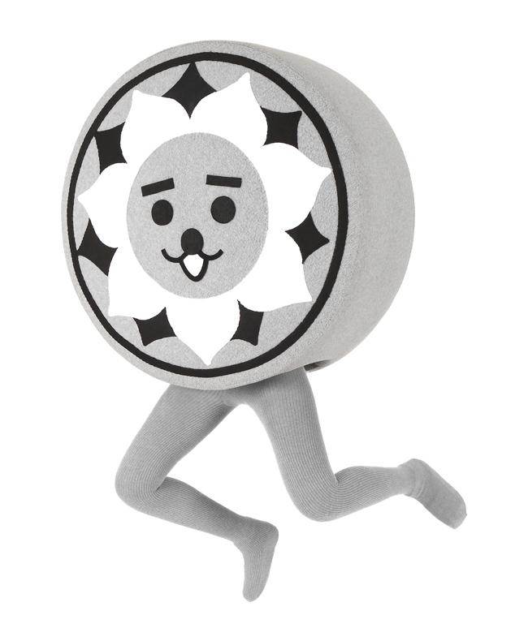

武蔵の国・国分寺跡から発掘された“あぶみ瓦”の妖精。「にしこくんと申しますブーン( *｀ω´)！！
アニメのまち練馬区をＰＲする公式アニメキャラクター。練馬大根と区名の馬がモチーフの自称ヒーロー。短編アニメやツイッターを発信中！『ボクねり丸☆ねらうは世界一！？みんな応援してねり♪
ゴロゴロ転がっているととってもしあわせ。でもあまり人にはみせないんです。口のバッテンはあまりしゃべりすぎないようにするためについちゃいました。頭のハート模様も特徴です！
次の課題へ